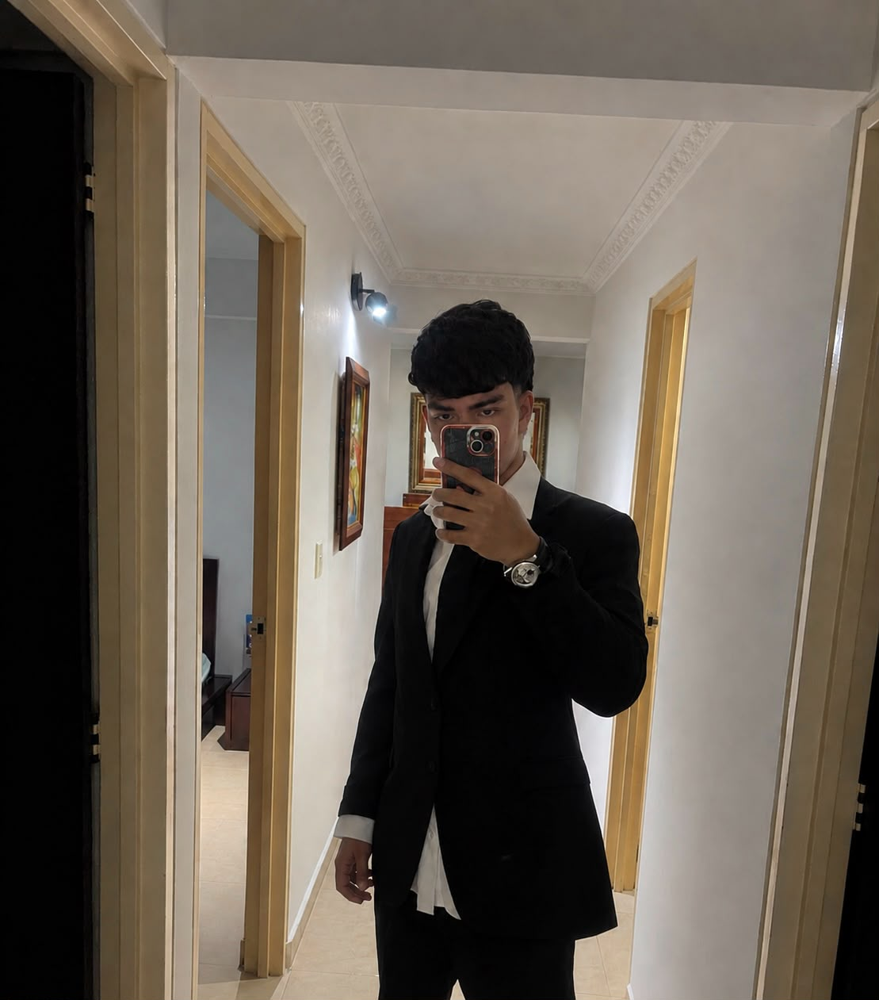

Claridad
Organizar el contenido para que cada persona encuentre lo que necesita sin complicaciones.
Me interesa el diseño y desarrollo web, y cómo una buena idea puede convertirse en una experiencia digital clara y fácil de usar.
En este portafolio comparto ideas de proyectos y sigo aprendiendo a crear sitios web con HTML, CSS y JavaScript. Me gusta combinar una apariencia cuidada con una navegación sencilla.

Ideas simples, decisiones cuidadas y atención a las personas que usarán el sitio.
Organizar el contenido para que cada persona encuentre lo que necesita sin complicaciones.
Usar colores, espacios y elementos visuales que ayuden a comunicar la idea del proyecto.
Probar, mejorar y aprender con cada página y cada nuevo reto de desarrollo web.
Me interesa seguir practicando las bases del desarrollo web y aprender a crear experiencias útiles en distintos dispositivos.
Explora las ideas de mi portafolio o escríbeme para conversar sobre un proyecto.